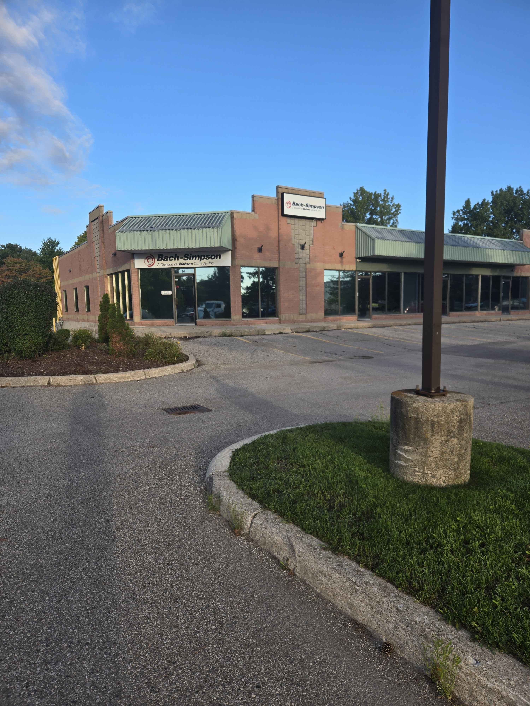

Summer 2026
Software Developer Intern | Wabtec Corporation | London, ON
Abstract/Introduction
This work term report will summarize my experience of my first co-op work term at Bach-Simpson, a division of Wabtec Canada during the summer. I had the opportunity to maintain and internal web applications and Windows services as well as learn about the specifics of software engineering in the rail sector.
Information About the Employer

Wabtec is a multinational manufacturing company that specializes in products and technologies for freight and passenger rail systems. Bach-Simpson, the Wabtec subsidiary where I worked, primarily focuses on the development and manufacturing of event recorders for passenger trains. These event recorders are crash-hardened devices designed to capture and store data related to critical train functions. In the event of an accident, the recorded data can be used by investigators to determine the condition and operation of the train leading up to the incident.
The software team at Bach-Simpson is responsible for maintaining customer facing event recorder embedded software as well as internal web tools used to assist in manufacturing. This includes collaborating with transit agencies all across North America on the best way to develop and maintain software for their respective locomotives.
In addition, the software team runs on an agile project management system where work is broken into small iterative cycles called sprints and stand-up meetings to discuss progress are a daily occurrence. This allows for great customer collaboration and ability to adapt to changing priorities.
Finally, the software team at Bach-Simpson has been extremely easygoing and helpful towards any question I may pose. The atmosphere of the team is supportive, team-oriented, positive and not afraid to have fun at work. This is exemplified by the Go train costume we have hanging by our desks. This makes for a very welcoming environment where I feel I can learn and grow my software engineering skills.


Goals
Goal #1: Develop stronger proficiency in refactoring legacy code and documentation.
Overall, I had many opportunities to improve my skills in refactoring legacy applications throughout this term. This includes a part info page I was asked to modernize where I successfully refactored many separate ASP pages into one central page built with the more modern ASP.NET MVC. This has successfully been live for 3 months as of September with only minor bugs that were easily fixed retroactively. However, In future terms, I would like to reduce my reliance on AI tools to interpret legacy programs.
Goal #2: Develop stronger proficiency in diagnosing and resolving issues with backend services.
I was quickly given the job to be the primary maintainer of all Bach-Simpson's Windows services that handle crucial data such as time tickets and open sales orders. In this role I believe I have fulfilled this goal. Several times over the course of the term bugs would surface that would negatively impact the services, which I was able to swiftly diagnose and resolve. One such instance of this was when our tool for tracking employee time went down a couple days before a pay day. I was quickly able to isolate an issue with database connectivity and fix the issue on time.
Goal #3: Prepare training modules for topics that I am familiar with that can be shared with the team.
At the end of my term I was given a task to carry out a transition of a website hosted from one computer to another. With this the URL system the website used needed to be overhauled to prevent additional work in the future. With this overhaul, I successfully wrote and published a training document to the software team's wiki on how the link system works as well as how to use and maintain it if future work needs to be done.
Job Description
At Bach-Simpson I was given the opportunity to develop and maintain company internal websites and Windows services. These web tools are essential to supporting engineering and production by providing an interface to Bach-Simpson's MRP system which determines scheduling, prioritization of tasks and inventory management. Software development is done in an agile environment meaning daily stand-up meetings and biweekly sprint retrospectives are done to keep the team informed on progress. Microsoft's .NET framework is used to develop the web applications along with significant use of relational databases to interact with MRP. Through personal projects prior to working here and while on the job I have gained experience in these important development tools.
Conclusion
Overall, my first co-op term introduced me to professional software development and has provided me with invaluable experience in development of web applications, backend Windows services and project management. In addition, I learned how custom software plays a role in assisting manufacturing through interacting with Material Requirements Planning systems, specifically in the rail industry. These experiences have turned me into a much stronger software developer and I look forward to growing further with Bach-Simpson during my next co-op term.